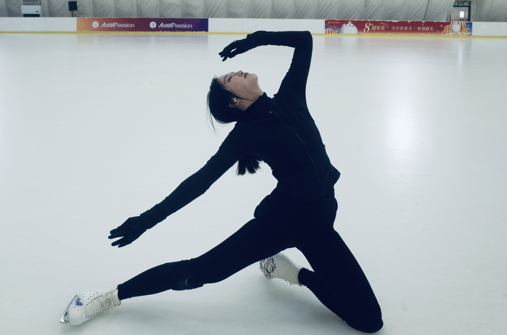

Figure skating is one of my favorite sports. I enjoy the combination of balance, movement, technical precision, and the sense of progression that comes from mastering a new skill. I am currently working on one-foot slaloms, backward crossovers, edge control, and gradually progressing toward turns and more advanced footwork.
Current focus · Edge control · One-foot slaloms · Backward crossovers
Learning movement through precision and repetition.